電梯套件 ElevatorKit
學生操作手冊
電梯的外觀、按鈕偵測、門板、顯示器都已經做好。你要在 BP_ElevatorKit 裡寫出「電梯什麼時候該做什麼」。這份手冊一步一步告訴你要開哪個檔案、點哪裡、用哪些節點。
Kit_ 的函數，都不要修改。1拿到哪些檔案
練習地圖本身沒有任何程式。電梯的所有程式都在 BP_ElevatorKit 裡，所以寫完之後，只要把這個 BP 放進你自己的場景就能用（第 14 節）。
2打開練習地圖，先試玩一次
- 在 Content Browser 依序點進
Content→ElevatorKit→Maps。 - 雙擊 Lvl_ElevatorKit_Demo。如果跳出「要不要存檔」的對話框，存你自己原本開著的地圖即可。
- 按工具列上的綠色 ▶ Play。
- 你會出生在房子正面外側。往前走進房子，電梯在最裡面；旋轉樓梯可以走上 2F。
- 走到電梯門前（約 2.5 公尺內），按 E。
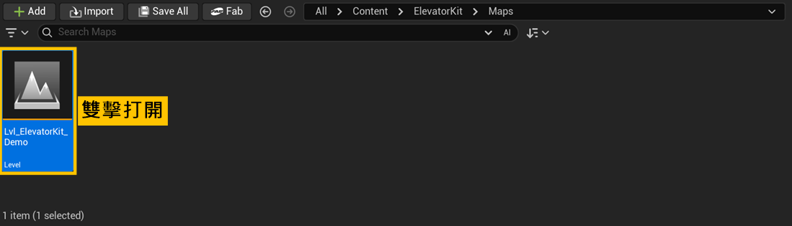
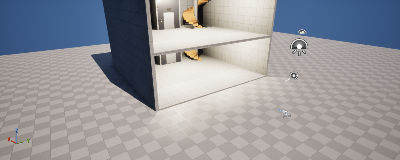
畫面左上角會出現 TODO: OnCallButtonPressed，樓層 1。這代表按鈕偵測正常，接下來要由你寫程式。按 Esc 結束試玩。
3打開 BP_ElevatorKit
- Content Browser 回到
Content→ElevatorKit。 - 雙擊 BP_ElevatorKit（縮圖是一個小電梯，下方寫 Blueprint Class）。
- Blueprint 編輯器會在新視窗打開。視窗太小的話，按右上角的「最大化」。
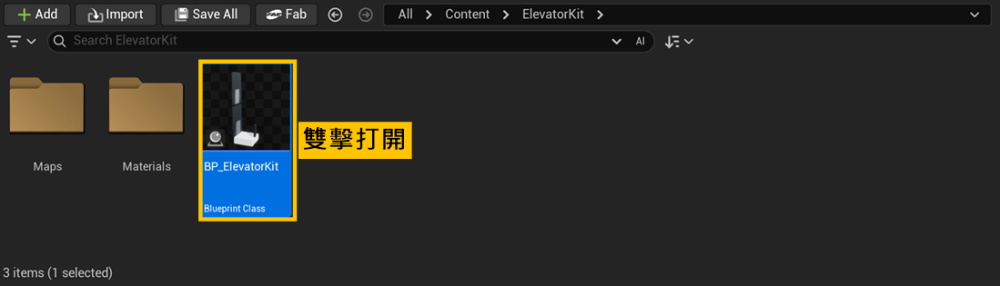
EV 再點 Details 的「Edit BP_ElevatorKit」也會開到同一個 BP，但新手容易改到關卡裡那一台的設定值。請一律從 Content Browser 打開。4認識 BP 編輯器
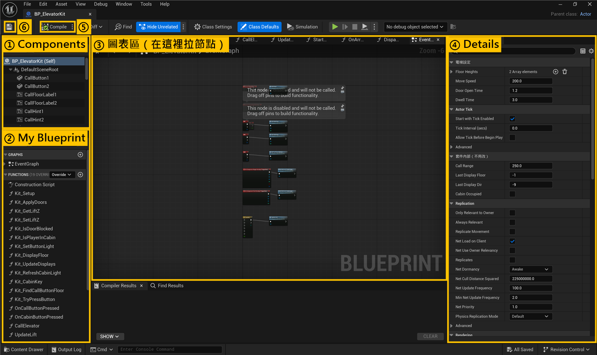
| 編號 | 區域 | 這次會用來做什麼 |
|---|---|---|
| ① | Components | 電梯的零件（車廂、門板、按鈕、顯示器）。只看不改。 |
| ② | My Blueprint | 最常用。Graphs、Functions（函數）、Variables（變數）都在這裡。雙擊函數名稱就會打開它。 |
| ③ | 圖表區 | 拉節點、接線的地方。上方的分頁可以切換已打開的函數。 |
| ④ | Details | 選到什麼就顯示什麼的設定：變數的型別與預設值、函數的輸入參數。 |
| ⑤ | Compile | 每次改完都要按。圖示變成綠色勾勾才代表沒有錯誤。 |
| ⑥ | Save | 存檔（Ctrl+S）。Compile 不等於存檔。 |
圖表區操作：按住滑鼠右鍵拖曳移動畫面，滾輪縮放，按 Home 把所有節點縮放到畫面內。
5EventGraph：已經接好，不要改
在 My Blueprint 的 GRAPHS 底下雙擊 EventGraph，看看套件幫你接好了什麼。這一頁的接線決定了「玩家做了什麼動作，就呼叫哪個函數」。
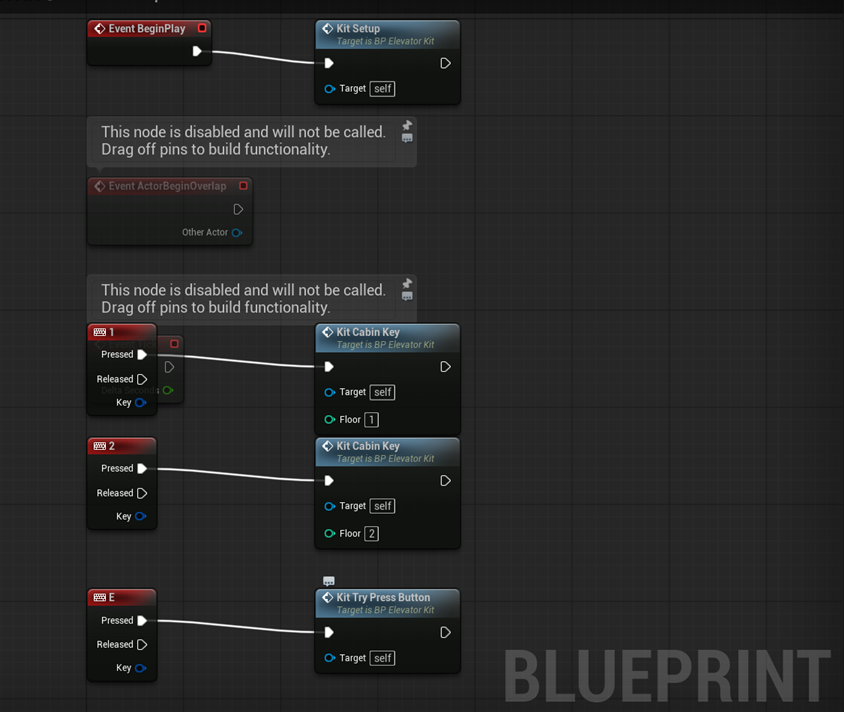
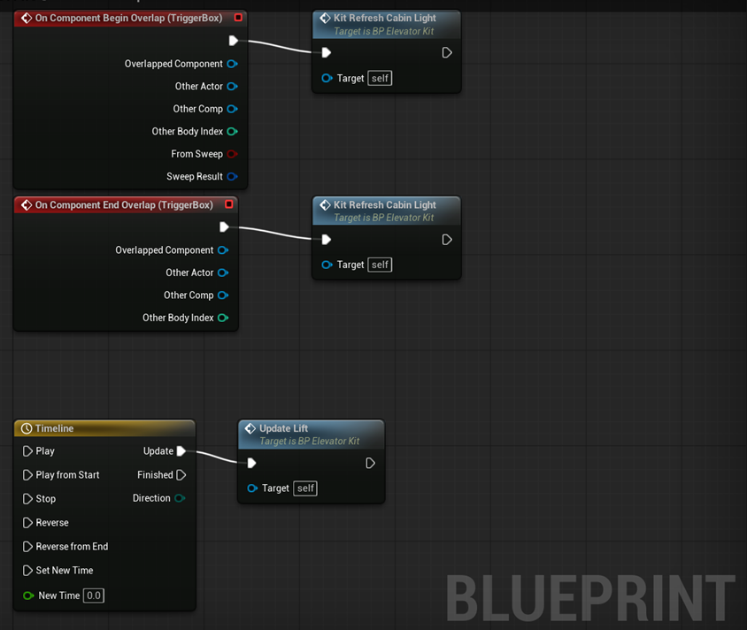
| 事件 | 接到 | 最後會呼叫到你寫的 |
|---|---|---|
| Event BeginPlay | Kit Setup | （初始化，不用管） |
| 按 1 / 2 | Kit Cabin Key | OnCabinButtonPressed（只有在車廂裡才會呼叫） |
| 按 E | Kit Try Press Button | 站在某層門外 → OnCallButtonPressed（在車廂裡按 E 不會有反應） |
| 進入／離開 TriggerBox | Kit Refresh Cabin Light | （車廂燈，不用管） |
| Timeline 的 Update | Update Lift | UpdateLift，每一幀都會執行一次 |
6設定值與你自己的變數
在 My Blueprint 展開 VARIABLES，會看到兩個分類：
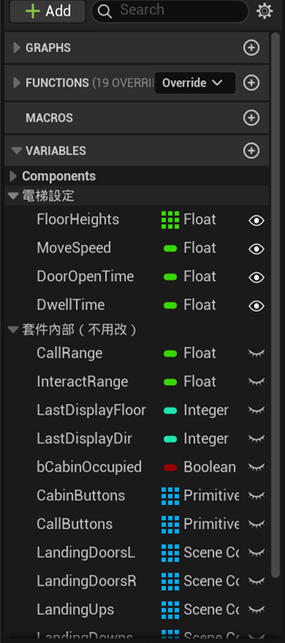
電梯設定（可以讀，也可以調）
| 變數 | 預設值 | 意思 |
|---|---|---|
FloorHeights | [0, 500] | 每層車廂的高度（cm）。索引從 0 開始：1F 是索引 0，2F 是索引 1 |
MoveSpeed | 200 | 移動速度，cm／秒 |
DoorOpenTime | 1.2 | 開或關一次門要幾秒 |
DwellTime | 3.0 | 門全開後停留幾秒 |
套件內部（不用改）
給 Kit_ 函數用的。不要讀也不要寫。
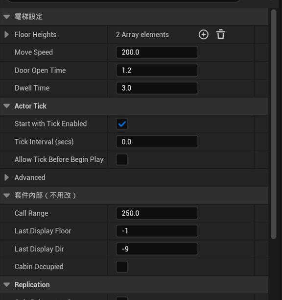
你要新增的 7 個變數
電梯「現在在第幾層」、「正在做什麼」、「門開了多少」這些資料，套件沒有提供。下表列出整份作業會用到的全部變數，請照表自己新增。名稱、型別、預設值都要和表上一致，之後看手冊和問老師才對得起來。
| 名稱 | 型別 | 預設值 | 意思 | 從第幾關開始用 |
|---|---|---|---|---|
State | Integer | 0 | 電梯現在在做什麼（見下方的狀態編號） | 關卡 1 |
CurrentFloor | Integer | 1 | 電梯停靠（或剛離開）的樓層，1 或 2 | 關卡 1 |
TargetFloor | Integer | 1 | 正在前往的樓層，1 或 2 | 關卡 1 |
DoorAlpha | Float | 0.0 | 門開了多少：0 = 全關，1 = 全開 | 關卡 2 |
DwellRemaining | Float | 0.0 | 門全開後，還要再停幾秒 | 關卡 2 |
Direction | Integer | 0 | 移動方向：1 = 上，−1 = 下，0 = 停 | 關卡 3 |
Requests | Boolean 陣列 | [false, false]（兩格） | 每一層有沒有人在等：第 0 格 = 1F，第 1 格 = 2F | 關卡 4 |
State 的編號（請照這個約定使用）：
| 值 | 狀態 | 門 |
|---|---|---|
| 0 | 待命 | 關著 |
| 1 | 開門中 | 從 0 開到 1 |
| 2 | 停留 | 全開，倒數 DwellRemaining |
| 3 | 關門中 | 從 1 關到 0 |
| 4 | 移動中 | 關著 |
關卡 1 只會用到 0（待命）和 4（移動中），其他狀態到關卡 2 才用。
這些變數什麼時候該改成什麼值、在哪個函數裡改，才是這份作業要你想的部分。
新增變數的方法
- 在 My Blueprint 的 VARIABLES 那一列按右邊的 ⊕。
- 輸入名稱後按 Enter。名稱用英文，看名字就要知道用途。
- 在 Details 的 Variable Type 選型別：整數用 Integer，小數用 Float，是／否用 Boolean。需要陣列的話，點型別右邊的圖示改成 Array。
- 在 Details 的 Category 輸入
我的變數，方便和套件的變數分開。 - 按 Compile，Details 下方才會出現 Default Value，在那裡填初始值。
Requests是陣列：Compile 後在 Default Value 按兩次 ⊕ 加入兩格，兩格都不要打勾。
預設值是 0 的 Integer、0.0 的 Float 不用另外填，新增時就已經是 0。
在圖表裡使用變數：從 My Blueprint 把變數拖進圖表區，放開時選 Get（讀取）或 Set（寫入）。快捷鍵是按住 Ctrl 拖曳為 Get，按住 Alt 拖曳為 Set。
7打開你要寫的函數
在 My Blueprint 的 FUNCTIONS 底下雙擊函數名稱，圖表區就會打開那個函數，上方多一個分頁。也可以在 My Blueprint 的搜尋框輸入名稱，比較快找到。
每個函數目前的內容與你要做的事
| 函數 | 輸入參數（已建好） | 打開時的內容 | 之後要做的 | 份量（約幾個節點） |
|---|---|---|---|---|
| OnCallButtonPressed | Floor | 印出 TODO 訊息 | TODO 可保留當除錯訊息；之後從 Print String 後面接節點 | 很少（約 2） |
| OnCabinButtonPressed | Floor | 印出 TODO 訊息 | TODO 可保留當除錯訊息；之後從 Print String 後面接節點 | 很少（約 2） |
| CallElevator | Floor | 空的 | 拉節點、接線 | 中（約 12） |
| UpdateLift | 無 | 空的（每幀呼叫已經接好） | 拉節點、接線，分關卡逐步加 | 最多（約 40～50） |
| StartMove | Floor | 空的 | 拉節點、接線 | 少（約 6） |
| OnArrived | 無 | 空的 | 拉節點、接線 | 少（約 8） |
| Dispatch | 無 | 空的 | 拉節點、接線（關卡 4） | 中（約 8） |
| FindRequest | 無（輸出 Result） | 不存在 | 關卡 4 自己新增，再拉節點、接線 | 中（約 6～8） |
輸入參數在哪裡看得到：打開函數後，紫色入口節點右邊的綠色接腳（例如 Floor），以及右側 Details 的 Inputs 區。它代表「別人呼叫這個函數時帶進來的樓層號碼」，你不用輸入，寫內容時拿 Floor 接腳去接其他節點就好。
「拉節點、接線」是什麼意思：從入口節點的白色箭頭 ▷ 往右拉，放進 Branch、Set 變數、Kit 函數、數學運算等節點，把線接起來組成判斷。大部分不是填數字，只有少數地方要填值（例如 Set State 填 4）。節點數是依參考寫法估計，你的寫法多一點或少一點都沒關係。
每一關要寫或修改的函數
| 關卡 | 函數 |
|---|---|
| 1 會動 | OnCabinButtonPressed、StartMove、UpdateLift、OnArrived |
| 2 門 | UpdateLift（加入開門、停留、關門）、OnArrived（改成開門）、CallElevator、OnCallButtonPressed，OnCabinButtonPressed 改成呼叫 CallElevator |
| 3 燈與顯示器 | OnCallButtonPressed、OnCabinButtonPressed（亮燈）、OnArrived（熄燈）、StartMove（記方向）、UpdateLift（更新顯示器） |
| 4 請求排隊與擋門 | 新增 FindRequest、Dispatch、CallElevator（登記請求）、OnArrived（清除登記）、UpdateLift（出口 0 改呼叫 Dispatch；出口 2、3 擋門） |
每個函數什麼時候被呼叫
| 函數 | 輸入 | 什麼時候會被呼叫 | 要做什麼 |
|---|---|---|---|
| OnCallButtonPressed | Floor | 玩家在第 Floor 層門外按 E | 按鈕亮燈，然後叫電梯 |
| OnCabinButtonPressed | Floor | 玩家在車廂裡按 1／2 | 同上 |
| CallElevator | Floor | 由上面兩個函數呼叫 | 電梯就在這層：開門。不在：把請求記下來 |
| UpdateLift | 無 | 每一幀（EventGraph 已接好） | 電梯的大腦：依目前狀態決定這一幀做什麼 |
| StartMove | Floor | 你自己決定 | 開始往第 Floor 層移動 |
| OnArrived | 無 | 你自己決定 | 到站：更新所在樓層、熄燈、開門 |
| Dispatch | 無 | 你自己決定（進階） | 門關好後，決定下一站去哪 |
| FindRequest | 無 | 由 Dispatch 呼叫（關卡 4，自己新增） | 回傳第一個有人在等的樓層，沒有就回傳 0 |
樓層編號一律是 1 和 2（1F = 1，2F = 2）。只有 FloorHeights 陣列的索引是從 0 開始。
OnCallButtonPressed 與 OnCabinButtonPressed：TODO 訊息可以保留當除錯用
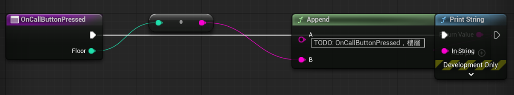
- 這組節點只會在畫面上印一行字，不影響電梯運作。建議保留：每次按按鈕都能確認「這個函數有被呼叫、樓層是幾」。
- 可以把 Append 的 A 欄文字改成你自己的訊息，例如
按了呼叫鈕，樓層，避免以為還沒做完。 - 到關卡 1、2 寫內容時，新節點要從 Print String 右邊的白色箭頭 ▷ 繼續往後接，不要從入口節點另外拉一條線（一個 ▷ 只能接一條）。
- 綠色的 Floor 接腳就是被按的樓層，拖曳它就能接到其他節點的 Floor 輸入。同一個接腳可以拉出好幾條線。
- 全部完成、不再需要除錯時，再框選 Append、Print String 和中間的轉換節點刪掉，並把入口節點直接接到後面的節點。
其他空殼函數
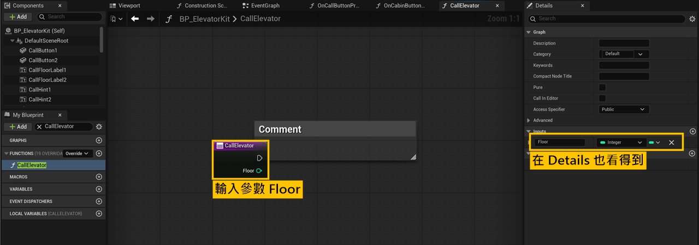
Floor（Integer）。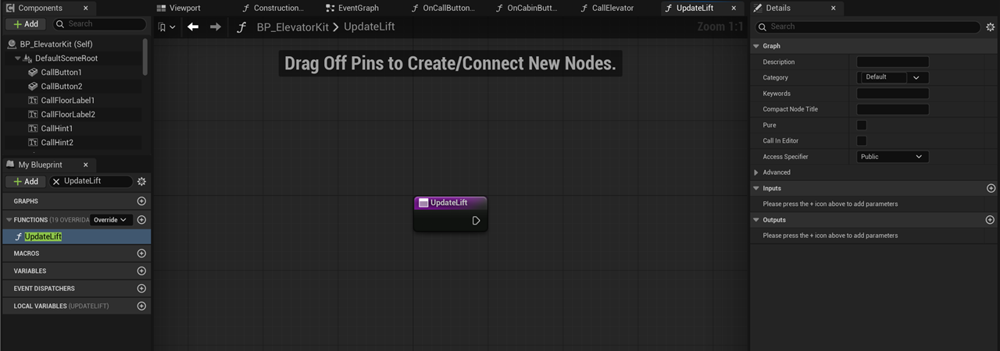
空殼函數只有入口節點，從入口的 ▷ 往右接就可以了。函數沒有回傳值，不需要 Return 節點。
8放入 Kit 節點
Kit_ 有三個用處：① 一眼分出誰寫的：Kit 開頭的是套件寫好的，沒有 Kit 的（OnCallButtonPressed、UpdateLift……）是你要寫的；② 好找：右鍵搜尋時打 Kit 就會一起列出來；③ 提醒不要改：拿來呼叫就好，不要打開修改。這跟 Unreal 專案常見的命名習慣一樣，例如 Blueprint 用 BP_ 開頭、材質實例用 MI_ 開頭。在函數分頁的空白處按右鍵，搜尋框輸入 Kit，就會列出所有套件函數。點一下就會放進圖表。
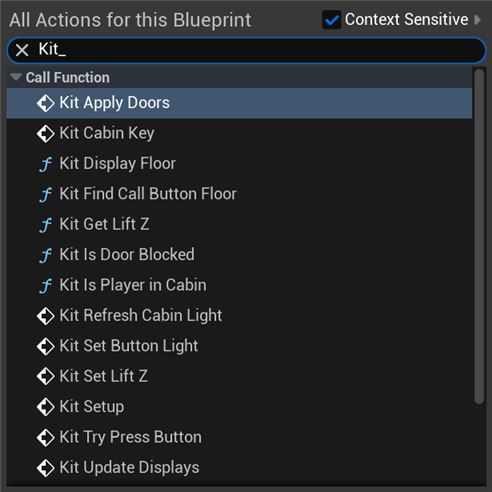
Kit。選單裡名稱的底線會顯示成空格。你會用到的只有這幾個：
- Kit Get Lift Z
- Kit Set Lift Z
- Kit Apply Doors
- Kit Is Door Blocked
- Kit Is Player in Cabin
- Kit Set Button Light
- Kit Update Displays
其他 Kit 函數（Setup、Cabin Key、Try Press Button、Find Call Button Floor、Display Floor、Refresh Cabin Light）是套件內部或 EventGraph 在用的（開始遊戲、按 1/2、按 E 時自動呼叫），整份作業都不會用到，不要放進你的程式。
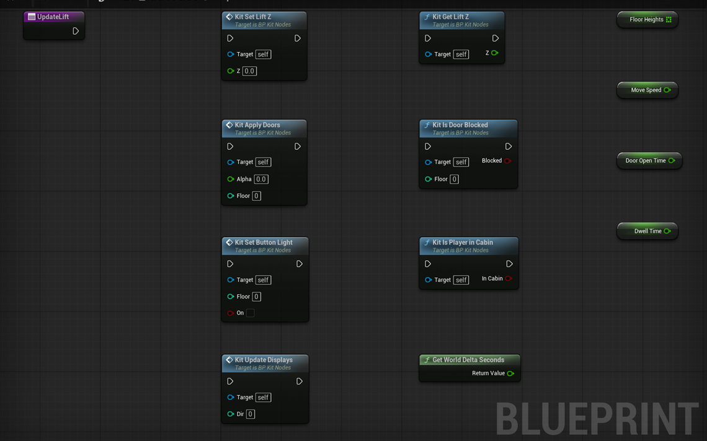
| 節點 | 輸入 | 輸出 | 做什麼 |
|---|---|---|---|
| Kit Get Lift Z | Z（Float） | 車廂目前高度。0 = 1F，500 = 2F | |
| Kit Set Lift Z | Z | 把車廂移到高度 Z。每幀呼叫、每次移一點，看起來就是在動 | |
| Kit Apply Doors | Alpha, Floor | 擺好門的位置。Alpha 0 = 全關，1 = 全開，0.5 = 開一半。車廂門和第 Floor 層的井口門一起動 | |
| Kit Is Door Blocked | Floor | Blocked（Boolean） | 玩家是否站在第 Floor 層門口 |
| Kit Is Player in Cabin | In Cabin（Boolean） | 玩家是否在車廂裡 | |
| Kit Set Button Light | Floor, On | 開關第 Floor 層按鈕的燈（車廂內和門外的一起） | |
| Kit Update Displays | Dir | 更新所有顯示器。數字自動算；Dir = 1 上箭頭，−1 下箭頭，0 不顯示。每幀呼叫一次 | |
| Get World Delta Seconds | Return Value | 這一幀經過了幾秒（Unreal 內建） |
常用的內建節點
按右鍵搜尋名稱即可放入：
| 搜尋 | 用途 |
|---|---|
Branch（或按住 B 點左鍵） | 如果……就……否則…… |
Switch on Int | 依整數走不同的路，適合「依狀態做不同的事」。出口不夠時按節點上的 Add pin |
Sequence | 依序做好幾件事 |
Get (a copy) | 從陣列取值，例如從 FloorHeights 取某一層的高度 |
+ - * /、Abs、Clamp、Min、Max | 數學運算 |
== != < > <= >=、AND、OR、NOT | 比較與邏輯 |
Print String | 在畫面上印字，除錯用 |
9關卡 1：會動
目標：在車廂裡按 2，電梯從 1F 移到 2F 停住；按 1 回到 1F。這一關不用管門和燈。
先在紙上回答
- 按下 2 之後，
State、TargetFloor、CurrentFloor各在什麼時候、被哪個函數改成什麼值？ - 每一幀車廂要移動多少距離？跟 MoveSpeed 和這一幀的秒數有什麼關係？
- 怎麼判斷「到了」？
架構：這一關做完後，各層之間的關係
關卡 1 只有一條路：在車廂按 1／2，OnCabinButtonPressed 直接呼叫 StartMove 記下目標；之後每一幀 UpdateLift 只要判斷「是不是移動中」，是就把車廂移一步，到站呼叫 OnArrived。
要編輯的地方
- 照第 6 節的表，先新增
State、CurrentFloor、TargetFloor（也可以一次把 7 個都建好）。 - 打開 OnCabinButtonPressed，在 Print String 後面呼叫 Start Move 並把 Floor 接過去。（之後的關卡會改成呼叫 CallElevator。）
- 打開 StartMove：把傳進來的
Floor存進TargetFloor，再把State設成 4（移動中）。做法：按住 Alt 把變數拖進圖表得到 Set 節點，白線依序接 入口 ▷ → Set TargetFloor → Set State；Floor 接腳拉到 Set TargetFloor 的輸入，Set State 填 4。StartMove 只負責下指令，真正讓車廂動的是 UpdateLift。 - 打開 UpdateLift：如果
State是 4（移動中），就讀目前高度（Kit Get Lift Z）、算這一幀要移多少、寫回新高度（Kit Set Lift Z）。到了就呼叫 On Arrived。State 不是 4 時什麼都不做。 - 打開 OnArrived：把
TargetFloor存進CurrentFloor（現在停在這一層了），再把State設回 0（待命）。OnArrived 沒有 Floor 輸入，這是刻意的：目的地早就被 StartMove 存在TargetFloor裡，按住 Ctrl 拖出 Get TargetFloor 讀出來就好。函數之間就是這樣靠變數傳遞資料。 - Compile → Save → 回主視窗按 Play 測試。
步驟 2～5 是照程式執行的順序排（按下按鈕 → 出發 → 每幀移動 → 到站），方便理解。實際上先寫哪一個都可以：函數都已經存在，呼叫一個還是空的函數也能 Compile。覺得 UpdateLift 太難，可以先把 StartMove、OnArrived 這兩個簡單的做完。四個都寫好後，按 Play 才看得到電梯動。
UpdateLift 詳細做法（關卡 1）
關卡 1 的 UpdateLift 只處理「移動中」這一種狀態，約 20 個節點。先看懂邏輯，再照下面的表放節點、接線。
如果 State 不是 4 → 什麼都不做
如果 State 是 4（移動中）：
Z = 車廂目前高度 （Kit Get Lift Z）
Target = 目標樓層的高度 （FloorHeights[TargetFloor − 1]）
Step = 這一幀可以走的距離 （MoveSpeed × Get World Delta Seconds）
如果 |Target − Z| ≤ Step → 到了：車廂設到 Target，呼叫 OnArrived
否則如果 Target > Z → 往上：車廂設到 Z + Step
否則 → 往下：車廂設到 Z − Step
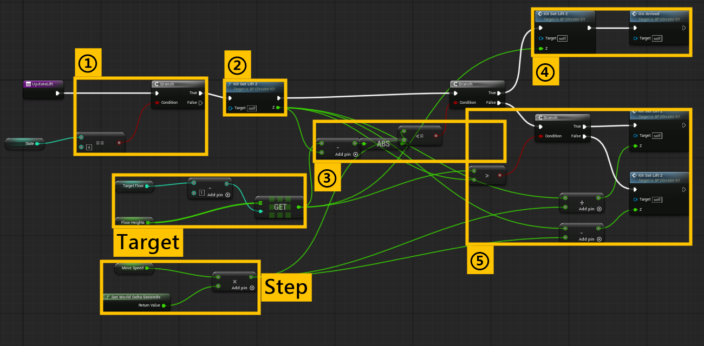
白線上的節點（依序執行）
| 圖中 | 節點 | 做什麼 | 怎麼放 |
|---|---|---|---|
| ① | Branch，Condition 接 State == 4 | 是不是移動中 | 右鍵搜尋 Branch，或按住 B 點左鍵 |
| ② | Kit Get Lift Z | 取得目前高度 Z | 右鍵搜尋 Kit Get Lift Z |
| ③ | Branch，Condition 接 Abs(Target − Z) <= Step | 到了沒 | 同 ① |
| ④ | Kit Set Lift Z（Z 接 Target）→ On Arrived | 到了：對齊目標、通知到站 | 右鍵搜尋 Kit Set Lift Z；On Arrived 從 My Blueprint 拖進來 |
| ⑤ | Branch，Condition 接 Target > Z；True → Kit Set Lift Z（Z + Step），False → Kit Set Lift Z（Z − Step） | 還沒到：往上或往下移一步 | Kit Set Lift Z 可以用 Ctrl+C／Ctrl+V 複製 |
[UpdateLift] ▷ → [① Branch：State == 4]
True ▷ → [② Kit Get Lift Z] ▷ → [③ Branch：Abs(Target − Z) <= Step]
True ▷ → [④ Kit Set Lift Z = Target] ▷ → [On Arrived]
False ▷ → [⑤ Branch：Target > Z]
True ▷ → [Kit Set Lift Z = Z + Step]
False ▷ → [Kit Set Lift Z = Z − Step]
False → （不接）
計算數值的節點（沒有白線）
| 要算的值 | 節點 | 怎麼放 |
|---|---|---|
State == 4 | Get State → ==，下面的格子填 4 | Ctrl 拖 State；從它的輸出拉線，搜尋 == |
| Target | Get FloorHeights → Get (a copy)；索引接 Get TargetFloor − 1 | Ctrl 拖 FloorHeights，從輸出拉線搜尋 Get (a copy)；Ctrl 拖 TargetFloor，拉線搜尋 -，下面填 1 |
| Step | Get MoveSpeed × Get World Delta Seconds | Ctrl 拖 MoveSpeed，拉線搜尋 *；右鍵搜尋 Get World Delta Seconds 接到下面 |
| 剩下的距離 | Target − Z → Abs | 從 Target 拉線搜尋 -，下面接 Z；再拉線搜尋 Abs |
| 到了沒 | 剩下的距離 <= Step | 從 Abs 拉線搜尋 <=，下面接 Step，輸出接 ③ 的 Condition |
| 往上嗎 | Target > Z | 從 Target 拉線搜尋 >，下面接 Z，輸出接 ⑤ 的 Condition |
| Z + Step、Z − Step | +、− | 從 Z 拉線搜尋 +、-，下面接 Step，輸出接兩個 Kit Set Lift Z 的 Z |
提示（卡住再打開）
目標高度可以用 Get (a copy) 從 FloorHeights 取出，索引要用 Floor − 1。
每一幀的移動量 = MoveSpeed × Get World Delta Seconds。
不要只判斷「目前高度 == 目標高度」。小數幾乎不會剛好相等，電梯會衝過頭。改成判斷「剩下的距離是不是已經小於等於這一步」，是的話直接把高度設成目標再呼叫 OnArrived。
驗收
- 進車廂按 2，電梯上到 2F 並停住，玩家跟著上去
- 按 1 回到 1F
- 停下的位置剛好在樓板高度，不會抖、不會衝過頭
10關卡 2：門
目標：到站後門打開，停留 DwellTime 秒（3 秒），再關上。門沒關好之前電梯不能動。在門外按 E 也要能叫電梯：電梯就在這層就開門，在別層就先開過來再開門。
先在紙上回答
- 對照第 6 節的 State 編號表（0 待命、1 開門中、2 停留、3 關門中、4 移動中）：到站之後，State 會依序經過哪些值？
- 每種狀態在 UpdateLift 裡各要做什麼？什麼條件會切到下一個狀態？
- 門開著的時候按了別層，電梯要記住「要去哪」。這一關用哪個變數記？
邏輯架構：關卡 2 的狀態圖
每個圓角方塊就是 UpdateLift 裡 Switch on Int 的一個出口，箭頭上寫的是「切到下一個狀態」的條件。
架構：這一關做完後，各層之間的關係
兩個按鈕都改成呼叫 CallElevator，由它決定開門或記下目的地。UpdateLift 從只看一個狀態，變成用 Switch 分成五個狀態，出發只在待命時發生。
這一關要改的函數
| 順序 | 函數 | 改什麼 |
|---|---|---|
| A | OnCallButtonPressed、OnCabinButtonPressed | Print String 後面改成呼叫 Call Elevator（OnCabinButtonPressed 原本的 Start Move 刪掉） |
| B | CallElevator | 新寫：決定開門、重新計時，或記下目的地 |
| C | OnArrived | 到站後改成「開門」 |
| D | UpdateLift | 最外層的 Branch 換成 Switch on Int，加上出口 1、2、3、0 |
| — | StartMove | 不用改 |
A. OnCallButtonPressed 與 OnCabinButtonPressed
邏輯：按了某層 → 印出除錯訊息 → 交給 CallElevator 決定怎麼處理 [入口] ▷ → ① Print String ▷ → ② Call Elevator（Floor ← 入口的 Floor）
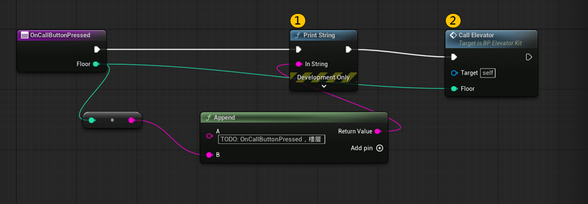
- 打開 OnCabinButtonPressed，點選關卡 1 放的 Start Move，按 Delete。
- 從 My Blueprint 把 CallElevator 拖進來（②），Print String（①）的 ▷ 接到它，入口的 Floor 接到它的 Floor。
- OnCallButtonPressed 做一樣的事。
B. CallElevator
邏輯：
如果 Floor == CurrentFloor 而且 State != 4 （電梯就停在這一層）
如果 State == 2（停留中） → DwellRemaining = DwellTime（門多開一會兒）
否則如果 State != 1 → State = 1（待命或關門中都重新開門）
否則如果 State != 4 （要去別層，電梯沒在移動）
TargetFloor = Floor → 記下目的地，等回到待命才出發
[入口] ▷ → ① Branch（Floor == CurrentFloor AND State != 4）
True ▷ → ② Branch（State == 2）
True ▷ → ③ Set DwellRemaining ← DwellTime
False ▷ → ④ Branch（State != 1） True ▷ → ⑤ Set State = 1
False ▷ → ⑥ Branch（State != 4） True ▷ → ⑦ Set TargetFloor ← Floor
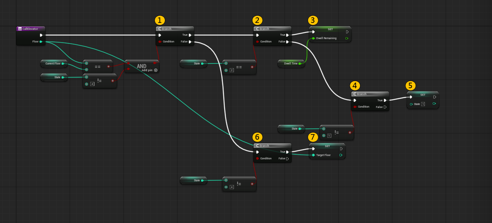
| 圖中 | 節點 | 條件／輸入怎麼接 |
|---|---|---|
| ① | Branch | Condition ← AND：A ← 入口 Floor == Get CurrentFloor；B ← Get State != 4 |
| ② | Branch（接 ① 的 True） | Get State == 2 |
| ③ | Set DwellRemaining（接 ② 的 True） | 輸入 ← Get DwellTime |
| ④ | Branch（接 ② 的 False） | Get State != 1 |
| ⑤ | Set State（接 ④ 的 True） | 填 1 |
| ⑥ | Branch（接 ① 的 False） | Get State != 4 |
| ⑦ | Set TargetFloor（接 ⑥ 的 True） | 輸入 ← 入口 Floor |
C. OnArrived
邏輯：到站 → 記下現在在哪一層 → 門從全關開始 → 進入開門中 [入口] ▷ → ① Set CurrentFloor ← Get TargetFloor ▷ → ② Set DoorAlpha = 0 ▷ → ③ Set State = 1
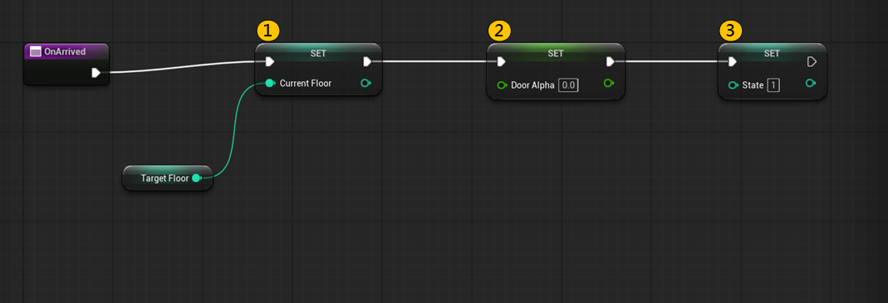
D. UpdateLift
第一步：把最外層的 Branch 換成 Switch on Int。
- 刪掉關卡 1 的 Branch（State == 4 那個）和它的 == 節點。Get State 留著。
- 右鍵搜尋
Switch on Int放進來（S）。Get State 接到它的 Selection。 - 按節點下方的 Add pin ⊕，直到出口有 0、1、2、3、4。
- 入口 ▷ 接到 S。出口 4 接到原本的 Kit Get Lift Z，關卡 1 後面整串都不用改。
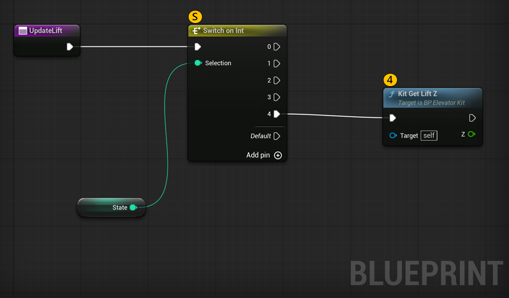
第二步：接上出口 1、2、3、0。下面每張圖都只畫一個出口，實際上四個出口的節點都放在同一個 UpdateLift 裡。Get World Delta Seconds（Δt）只要一個，從它的輸出拉多條線。
出口 1：開門中
邏輯：門開大一點 → 擺好門 → 全開了就進入停留，開始倒數
S 的 1 ▷ → ① Set DoorAlpha ← Min( DoorAlpha + Δt ÷ DoorOpenTime , 1 )
▷ → ② Kit Apply Doors（Alpha ← DoorAlpha，Floor ← CurrentFloor）
▷ → ③ Branch（DoorAlpha >= 1）
True ▷ → ④ Set State = 2 ▷ → ⑤ Set DwellRemaining ← DwellTime
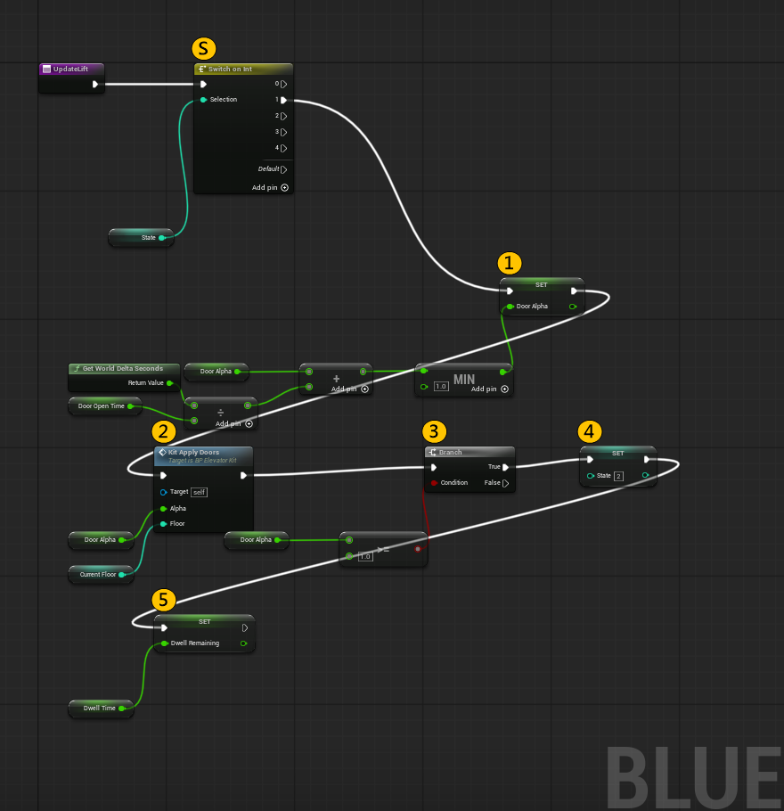
| 圖中 | 節點 | 輸入怎麼接 |
|---|---|---|
| ① | Set DoorAlpha | Min (Float)：A ← Get DoorAlpha +（Δt ÷ Get DoorOpenTime），B 填 1 |
| ② | Kit Apply Doors | Alpha ← Get DoorAlpha；Floor ← Get CurrentFloor |
| ③ | Branch | Get DoorAlpha >= 1 |
| ④ | Set State（接 ③ 的 True） | 填 2 |
| ⑤ | Set DwellRemaining | 輸入 ← Get DwellTime |
出口 2：停留
邏輯：倒數 → 數完了就開始關門
S 的 2 ▷ → ① Set DwellRemaining ← DwellRemaining − Δt
▷ → ② Branch（DwellRemaining <= 0） True ▷ → ③ Set State = 3
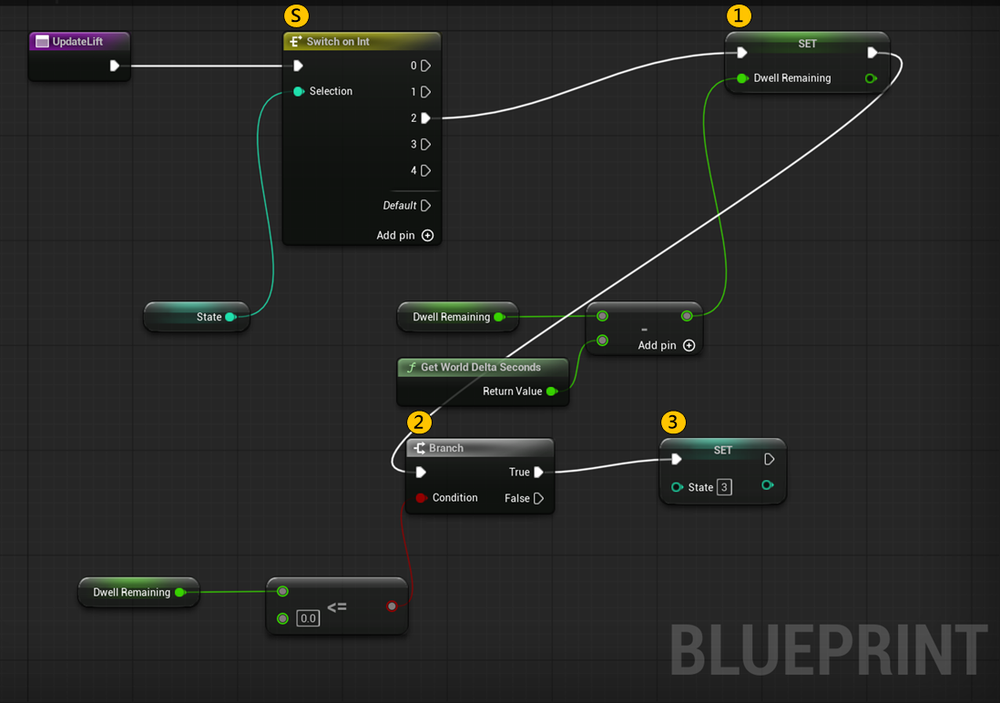
出口 3：關門中
邏輯：門關小一點 → 擺好門 → 全關了就回到待命
S 的 3 ▷ → ① Set DoorAlpha ← Max( DoorAlpha − Δt ÷ DoorOpenTime , 0 )
▷ → ② Kit Apply Doors（Alpha ← DoorAlpha，Floor ← CurrentFloor）
▷ → ③ Branch（DoorAlpha <= 0） True ▷ → ④ Set State = 0
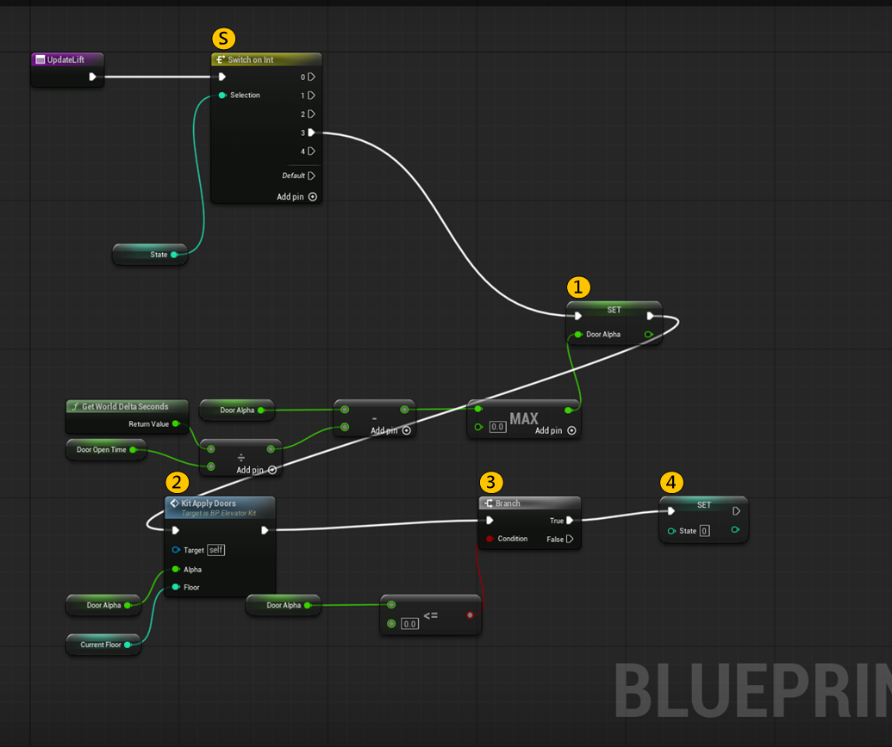
出口 0：待命
邏輯：有記下別的目的地，就出發 S 的 0 ▷ → ① Branch（TargetFloor != CurrentFloor） True ▷ → ② Start Move（Floor ← TargetFloor）
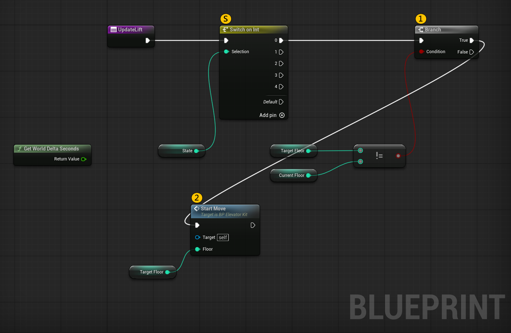
這就是「門沒關好之前電梯不能動」的做法：CallElevator 只負責把目的地記在 TargetFloor，只有待命（門已經全關）時才會呼叫 Start Move 出發，所以不用在 StartMove 裡檢查門。
驗收
- 在 1F 門外按 E：門打開，停 3 秒，關上
- 門開著時走進電梯按 2：門照常關好才出發，到 2F 開門、停留、關門
- 電梯在 1F 時，走樓梯上 2F 在門外按 E：電梯上來再開門
- 門正在關的時候，在門外再按一次 E：門重新打開
11關卡 3：燈和顯示器
目標：按下的按鈕要亮，電梯到那一層才熄；在本層按下的立刻熄。移動時顯示器出現方向箭頭，停下來就消失。樓層數字由套件自動顯示。
先在紙上回答
- 按鈕什麼時候亮？什麼時候熄？熄燈要寫在哪兩個函數？
- 方向（上／下）在什麼時候就能決定？存在哪個變數？什麼時候要歸零？
邏輯架構：燈與顯示器何時變化
按下按鈕 ─→ OnCallButtonPressed／OnCabinButtonPressed：亮燈 ─→ CallElevator
│
電梯就在這層（① 成立）：立刻熄燈 ←─────┤
└→ 記下 TargetFloor
出發 ─→ StartMove：Direction = 目標比現在高 ? 1 : −1
每一幀 ─→ UpdateLift：Kit Update Displays（移動中顯示 Direction，其他狀態顯示 0）
到站 ─→ OnArrived：熄掉這一層的燈，Direction = 0
架構：這一關做完後，各層之間的關係
這一關的狀態機沒有變，只是在原本的路上多呼叫兩個 Kit 函數：按下時亮燈、到站或在本層按時熄燈，以及每一幀先更新顯示器。
這一關要改的函數
| 順序 | 函數 | 加什麼 |
|---|---|---|
| A | OnCallButtonPressed、OnCabinButtonPressed | Print String 和 Call Elevator 中間插入 Kit Set Button Light（On 打勾） |
| B | CallElevator | ① 的 True 後面先插入 Kit Set Button Light（On 不打勾） |
| C | StartMove | 最前面插入 Set Direction |
| D | OnArrived | 插入熄燈和 Set Direction = 0 |
| E | UpdateLift | 入口和 Switch 中間插入 Kit Update Displays |
A. OnCallButtonPressed 與 OnCabinButtonPressed
[入口] ▷ → ① Print String ▷ → ② Kit Set Button Light（Floor ← 入口 Floor，On ✓）▷ → ③ Call Elevator（Floor ← 入口 Floor）
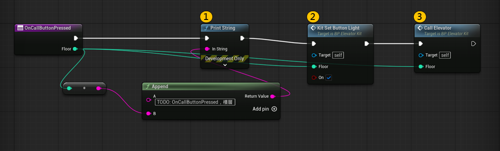
B. CallElevator
[入口] ▷ → ① Branch（Floor == CurrentFloor AND State != 4）
True ▷ → ② Kit Set Button Light（Floor ← 入口 Floor，On 不打勾）
▷ → ③ Branch（State == 2）
True ▷ → ④ Set DwellRemaining ← DwellTime
False ▷ → ⑤ Branch（State != 1） True ▷ → ⑥ Set State = 1
False ▷ → ⑦ Branch（State != 4） True ▷ → ⑧ Set TargetFloor ← Floor
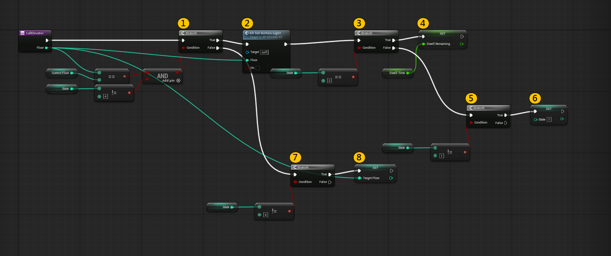
C. StartMove
邏輯：Direction = (Floor > CurrentFloor) ? 1 : −1
[入口] ▷ → ① Set Direction ← Select Int（A = 1，B = −1，Pick A ← Floor > CurrentFloor）
▷ → ② Set TargetFloor ← Floor ▷ → ③ Set State = 4
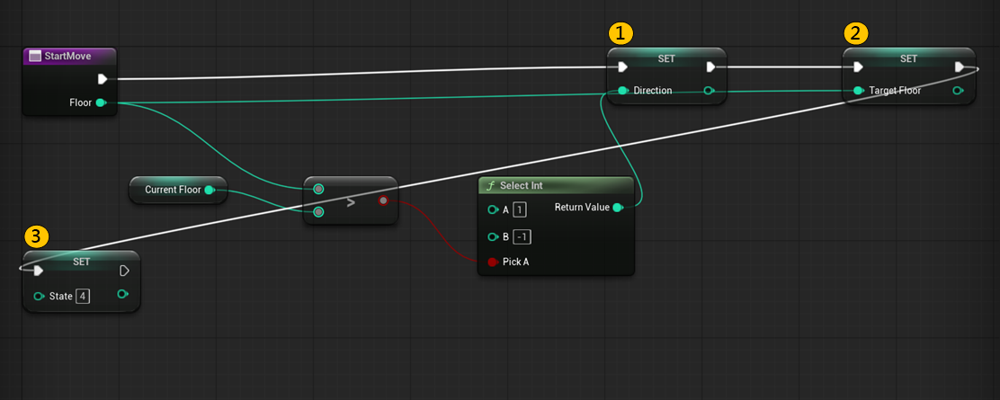
Select Int。D. OnArrived
[入口] ▷ → ① Set CurrentFloor ← TargetFloor
▷ → ② Kit Set Button Light（Floor ← Get CurrentFloor，On 不打勾）
▷ → ③ Set DoorAlpha = 0 ▷ → ④ Set Direction = 0 ▷ → ⑤ Set State = 1
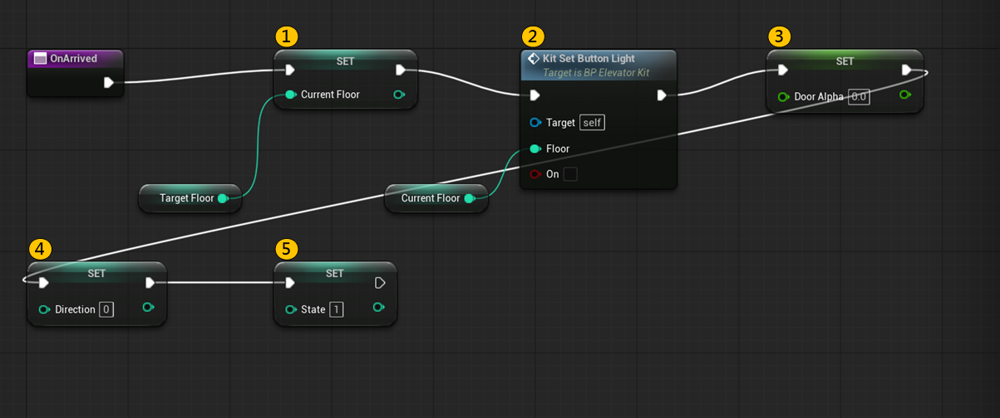
E. UpdateLift
邏輯：每一幀先更新顯示器，再依狀態做事
[入口] ▷ → ① Kit Update Displays（Dir ← Select Int：A = Direction，B = 0，Pick A ← State == 4）
▷ → S Switch on Int（出口 0～4 都不變）
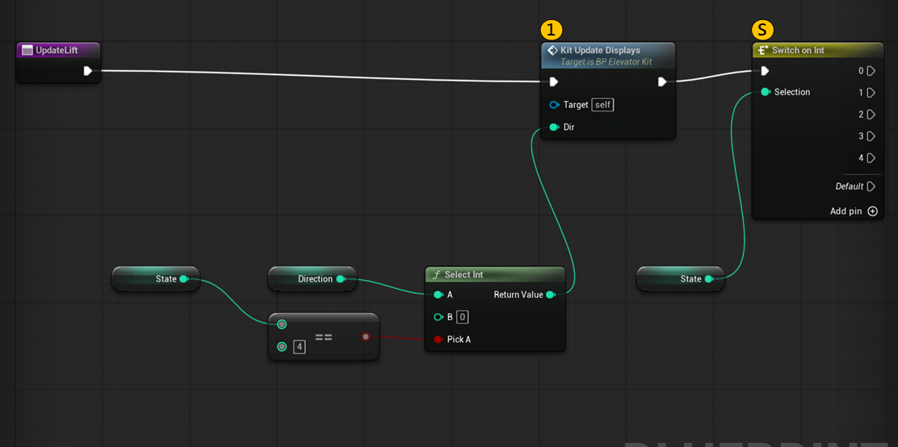
為什麼要用 Select Int：移動中才顯示箭頭（Dir = Direction），開門、停留、關門、待命時都傳 0，箭頭就會消失。
<。④ 箭頭停下來還在：OnArrived 漏了 ④ Set Direction = 0，或 UpdateLift 的 Pick A 沒接 State == 4。驗收
- 在車廂按 2：2 號按鈕亮起，到 2F 後熄燈
- 往上時顯示上箭頭，往下時顯示下箭頭，停下來箭頭消失
- 顯示器的數字會隨車廂位置變成 1 或 2
- 電梯停在 1F 時，在 1F 門外按 E：燈亮一下立刻熄，門打開
12關卡 4：請求排隊與擋門
目標：這一關做兩件事。
- 請求排隊：關卡 2、3 只用
TargetFloor記一個目的地，電梯移動中按的按鈕會被忽略（CallElevator 的「State != 4」那一關擋掉了）。改成用Requests陣列記下「每一層有沒有人在等」，移動中按的也記下來，等電梯停好、關好門再一個一個去。 - 擋門：有人站在門口時，門不能關。停留時間到了但門口有人，就再等一下；門正在關的時候有人走進門口，就重新打開。
先在紙上回答
- Requests 的第幾格代表幾樓？Floor 要怎麼換算成索引？
- 哪個函數把 Requests 設成 true？哪個函數把它清回 false？
- 電梯什麼時候才可以「決定下一站」？為什麼不能在 CallElevator 裡直接出發？
- 擋門要在哪兩個狀態檢查？兩種狀態被擋住時，各要切到哪裡？
邏輯架構：請求從登記到清除
按下按鈕 ─→ CallElevator
├─ 電梯就在這層、沒在移動 → 熄燈、開門或重新計時（和關卡 3 一樣）
└─ 其他情況（包括移動中） → Requests[Floor − 1] = true ← 只登記，不出發
待命（State 0）每一幀 ─→ Dispatch
├─ 本層有登記 → 清掉、熄燈、State = 1 開門
└─ 否則 FindRequest → Result > 0 → Start Move(Result)
到站 ─→ OnArrived：Requests[CurrentFloor − 1] = false（這一層的人接到了）
邏輯架構：加上擋門之後的狀態圖
待命 0 ── Dispatch 找到別層 ──▶ 移動中 4 待命 0 ── Dispatch 發現本層有人 ──▶ 開門中 1 移動中 4 ── 到站 ──▶ 開門中 1 開門中 1 ── 全開 ──▶ 停留 2 停留 2 ── 倒數到 0，門口有人 ──▶ 停留 2（DwellRemaining = 0.5，再等一下） ← 新增 停留 2 ── 倒數到 0，門口沒人 ──▶ 關門中 3 關門中 3 ── 門口有人 ──▶ 開門中 1（從目前的位置重新打開） ← 新增 關門中 3 ── 全關 ──▶ 待命 0
架構：這一關做完後，各層之間的關係
CallElevator 改成把請求登記在 Requests，待命時改由 Dispatch 用 FindRequest 決定下一站；停留和關門中都先問 Kit_IsDoorBlocked，門口有人就不關。
這一關要改的函數
| 順序 | 函數 | 改什麼 |
|---|---|---|
| A | CallElevator | ① 的 False 後面：刪掉 Branch（State != 4）和 Set TargetFloor，改成 Set Array Elem（Requests[Floor − 1] = true） |
| B | OnArrived | ① 後面插入 Set Array Elem（Requests[CurrentFloor − 1] = false） |
| C | FindRequest | 自己新增，回傳第一個有人在等的樓層 |
| D | Dispatch | 新寫：本層有人就開門，否則用 FindRequest 找下一站並出發 |
| E | UpdateLift 出口 0 | 原本的 Branch + Start Move 換成呼叫 Dispatch |
| F | UpdateLift 出口 2 | 倒數到 0 之後，先問 Kit Is Door Blocked 再決定關門 |
| G | UpdateLift 出口 3 | 最前面先問 Kit Is Door Blocked，有人就切回開門 |
| — | StartMove、按鈕函數、出口 1、出口 4 | 不用改 |
Set Array Elem，或從 Get Requests 的接腳拉出來搜尋。三個輸入：Target Array 接 Get Requests；Index 接「Floor − 1」；Item 打勾 = true、不打勾 = false。Size to Fit 不用勾。讀某一格則用 Get (a copy)（從 Get Requests 拉出來搜尋 Get）。A. CallElevator
[入口] ▷ → ① Branch（Floor == CurrentFloor AND State != 4）
True ▷ → ② Kit Set Button Light（On 不打勾）▷ → ③ Branch（State == 2）
True ▷ → ④ Set DwellRemaining ← DwellTime
False ▷ → ⑤ Branch（State != 1） True ▷ → ⑥ Set State = 1
False ▷ → ⑦ Set Array Elem（Target Array ← Requests，Index ← Floor − 1，Item ✓）
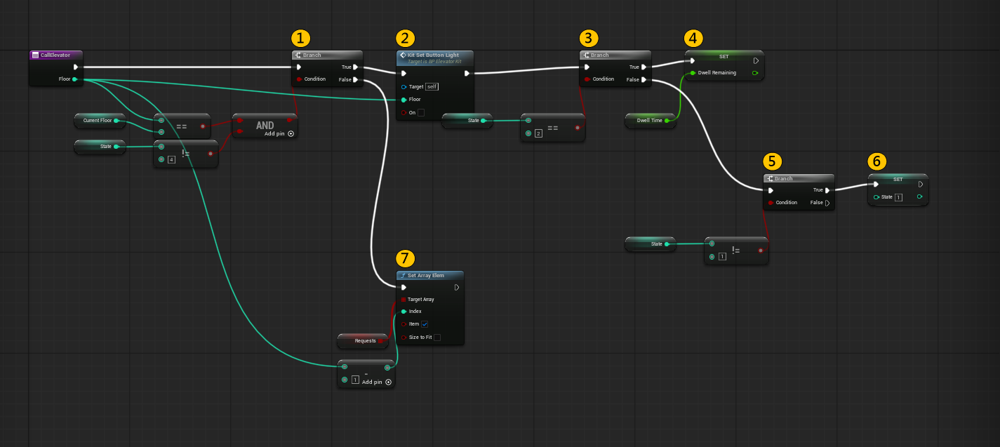
- 點選 ① False 後面的 Branch（State != 4），連同它的
!=節點和 Set TargetFloor 一起刪掉。 - 按住 Ctrl 把
Requests拖進來（Get），從它的接腳拉出來搜尋Set Array Elem。 - 放一個
−節點：上面接入口的 Floor，下面填 1，輸出接到 Index。 - Item 打勾。① 的 False ▷ 接到 Set Array Elem。
為什麼拿掉「State != 4」：這一關就是要讓移動中按的也記下來。CallElevator 只負責登記，什麼時候出發交給 Dispatch。
B. OnArrived
[入口] ▷ → ① Set CurrentFloor ← TargetFloor
▷ → ② Set Array Elem（Requests，Index ← CurrentFloor − 1，Item 不打勾）
▷ → ③ Kit Set Button Light（Floor ← CurrentFloor，On 不打勾）
▷ → ④ Set DoorAlpha = 0 ▷ → ⑤ Set Direction = 0 ▷ → ⑥ Set State = 1
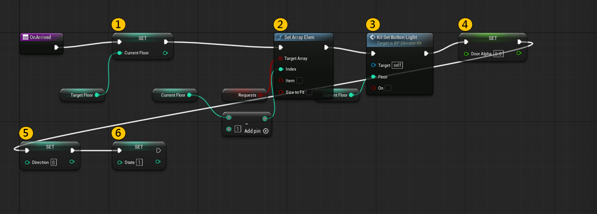
C. 練習：自己新增 FindRequest 函數
Dispatch 需要知道「現在哪一層有人在等」。請把這個判斷寫成一個獨立的函數 FindRequest，再讓 Dispatch 呼叫它。這是整份作業裡唯一要你從零新增的函數，順便練習「有回傳值的函數」。
函數規格
| 項目 | 內容 |
|---|---|
| 名稱 | FindRequest |
| 輸入 | 無 |
| 輸出 | Result（Integer） |
| 要做的事 | 從 1F 開始檢查 Requests，回傳第一個有人在等的樓層號碼（1 或 2）；都沒有人在等就回傳 0 |
建立步驟
- 在 My Blueprint 的 FUNCTIONS 那一列按右邊的 ⊕，新增一個函數。
- 把名稱改成
FindRequest，按 Enter。 - 在 Details 的 Outputs 按 ⊕，名稱改成
Result，型別選 Integer。圖表裡會自動出現一個 Return Node。 - 在入口節點和 Return Node 之間寫判斷。每一條路最後都要接到 Return Node，並把 Result 接上要回傳的值。
- Compile。之後在 Dispatch 裡就能放 Find Request 節點，它的 Result 輸出就是答案。
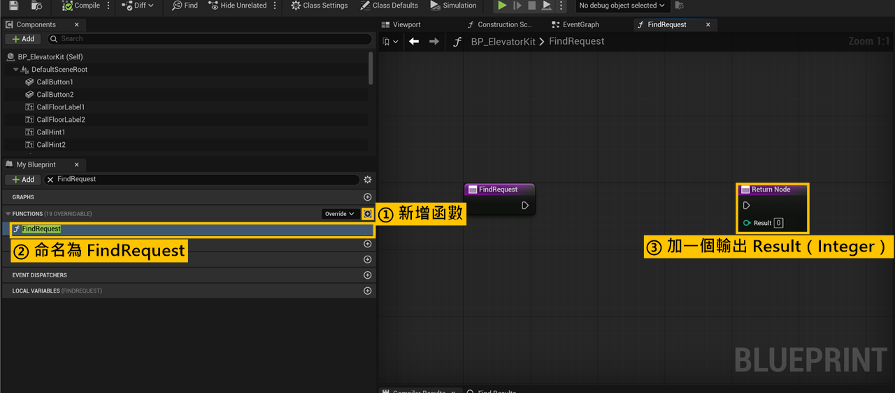
示意：輸入什麼、回傳什麼
| Requests[0]（1F） | Requests[1]（2F） | FindRequest 回傳 |
|---|---|---|
| false | false | 0（沒有人在等） |
| true | false | 1 |
| false | true | 2 |
| true | true | 1（從 1F 開始找，先找到的先回傳） |
函數內容要怎麼寫（用 Branch，或用 For Each Loop 跑整個陣列）由你決定。寫好後用 Print String 印出 Result，對照上面的表測試。
參考答案（先自己寫，寫不出來再打開）
[入口] ▷ → ① Branch（Requests[0]）
True ▷ → ② Return Node（Result = 1）
False ▷ → ③ Branch（Requests[1]）
True ▷ → ④ Return Node（Result = 2）
False ▷ → ⑤ Return Node（Result = 0）
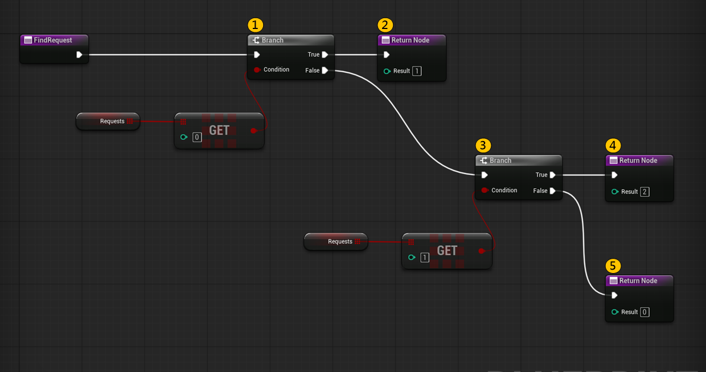
Return Node 就能多放幾個）。GET 是從 Get Requests 拉出來搜尋 Get (a copy)，格子裡填 0 或 1。D. Dispatch
邏輯：電梯待命時決定下一步
如果 Requests[CurrentFloor − 1] 是 true（本層有人在等）
清掉這一格、熄燈、State = 1（直接開門，不用移動）
否則
f = FindRequest()
如果 f > 0 → Start Move(f)
（f = 0 表示沒人在等，什麼都不做，下一幀再檢查）
[入口] ▷ → ① Branch（Requests[CurrentFloor − 1]）
True ▷ → ② Set Array Elem（Index ← CurrentFloor − 1，Item 不打勾）
▷ → ③ Kit Set Button Light（Floor ← CurrentFloor，On 不打勾）▷ → ④ Set State = 1
False ▷ → ⑤ Find Request ▷ → ⑥ Branch（Result > 0） True ▷ → ⑦ Start Move（Floor ← Result）
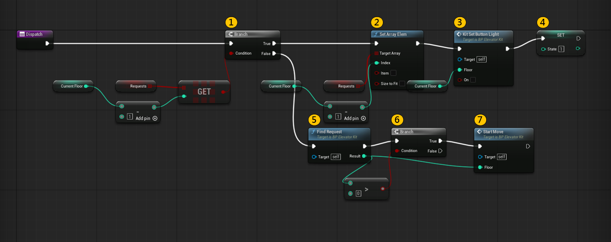
> 0 給 ⑥，一條到 ⑦ 的 Floor。為什麼先檢查本層：如果本層有登記卻直接交給 FindRequest，它可能回傳本層，電梯就會對自己 Start Move、原地「移動」一次才開門。先檢查本層，直接開門比較乾淨。
E. UpdateLift 出口 0：交給 Dispatch
S 的 0 ▷ → ① Dispatch
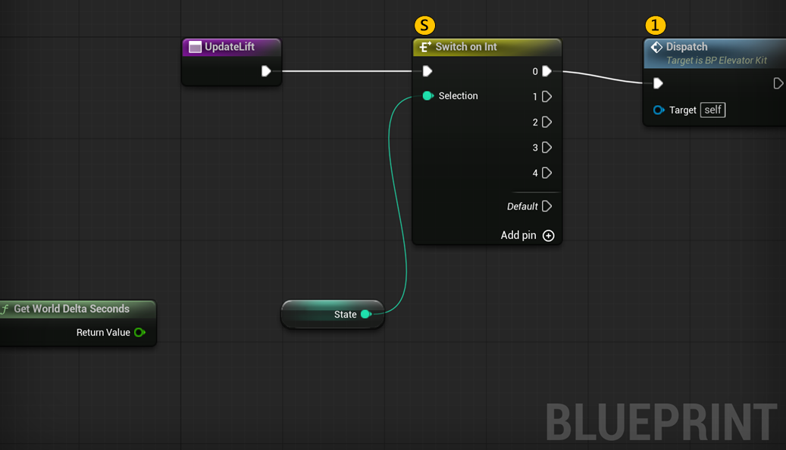
F、G. 擋門
Get CurrentFloor。只需要在兩個狀態檢查：停留快結束時（出口 2）和門正在關的時候（出口 3）。開門中、全開停留中，門本來就不會夾到人，不用檢查。
F. UpdateLift 出口 2：停留時間到了，門口有人就再等
邏輯：倒數 → 數完了 → 門口有人？ 有：再等 0.5 秒 沒有：開始關門
S 的 2 ▷ → ① Set DwellRemaining ← DwellRemaining − Δt
▷ → ② Branch（DwellRemaining <= 0）
True ▷ → ③ Kit Is Door Blocked（Floor ← CurrentFloor）
▷ → ④ Branch（Blocked）
True ▷ → ⑤ Set DwellRemaining = 0.5
False ▷ → ⑥ Set State = 3
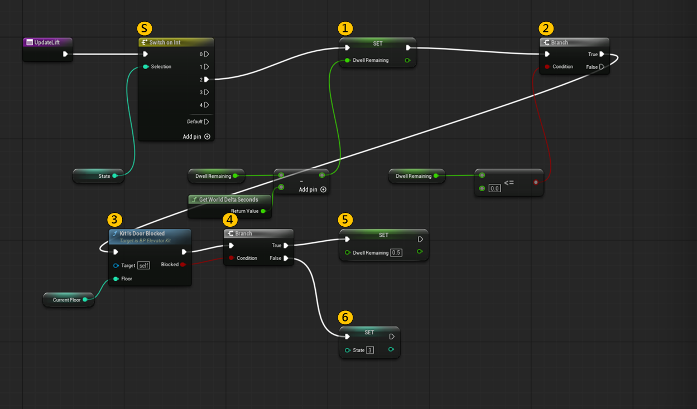
G. UpdateLift 出口 3：門正在關，門口有人就重新打開
邏輯：先問門口有沒有人 → 有：切回開門 沒有：照關卡 2 繼續關門
S 的 3 ▷ → ① Kit Is Door Blocked（Floor ← CurrentFloor）
▷ → ② Branch（Blocked）
True ▷ → ③ Set State = 1
False ▷ → ④ Set DoorAlpha ← Max( DoorAlpha − Δt ÷ DoorOpenTime , 0 )
▷ → ⑤ Kit Apply Doors ▷ → ⑥ Branch（DoorAlpha <= 0） True ▷ → ⑦ Set State = 0
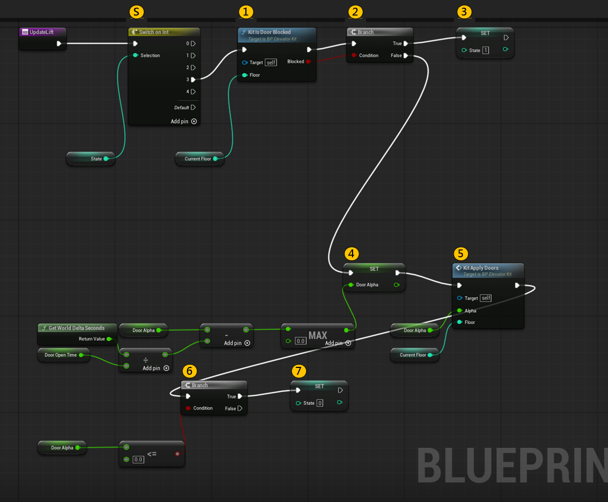
為什麼 ③ 只要 Set State = 1、不用改 DoorAlpha：DoorAlpha 停在關到一半的值，下一幀出口 1 會從這個值繼續 +，門就從目前的位置順順地打開，不會跳回全關。
驗收
- 在車廂按 2，電梯往上時再按 1：1 號燈亮著，到 2F 開門、停留、關門後，自動回 1F
- 電梯在 2F 停留時，到 1F 門外按 E：2F 關好門才下來
- 停留時間到了但你站在門口：門不關，離開門口後約 0.5 秒開始關
- 門正在關時走進門口：門重新打開
- 沒有人按任何按鈕時：電梯停在原地，門關著不動
挑戰（選做）
把出口 4 的等速移動改成先加速、再減速：多一個變數記目前速度，每一幀加一點，快到站時減一點。
13測試與除錯
每次修改後的固定流程
- 按 Compile。下方 Compiler Results 出現紅字就點它，會跳到出錯的節點。
- 按 Ctrl+S 存檔。
- 回到主視窗按 ▶ Play，在練習地圖裡實際走一次。
測試時的按鍵
| 按鍵 | 位置 | 會呼叫 |
|---|---|---|
| E | 某層電梯門外約 2.5 m 內 | OnCallButtonPressed(該層) |
| 1 / 2 | 車廂裡 | OnCabinButtonPressed(1 或 2) |
不在車廂裡按 1／2，畫面會顯示「EV: 請先進入電梯，或到門外按 CALL [E]」，這是正常的。
除錯技巧
- Print String：狀態改變時印出來，例如「State 1 → 2」。用 Append 把文字和數字接在一起。
- 即時看執行路線：Play 時切到 BP 編輯器，工具列的 debug 下拉選單選
EV，正在執行的白線會發光。 - 中斷點：選一個節點按 F9，執行到那裡會暫停，滑鼠移到接腳上可以看當時的值。再按 F9 取消。
常見症狀
| 症狀 | 先檢查 |
|---|---|
| 電梯衝過頭、停不下來 | 「到站」的判斷是不是寫成「等於」 |
| 按了沒反應 | 入口節點的 ▷ 有沒有接出去；Kit 節點有沒有串在白線上；有沒有 Compile |
| 門一直開開關關 | 兩個切換條件是不是同時成立 |
| 電梯開著門就走了 | StartMove 有沒有先檢查門關好 |
| Accessed None 或陣列越界錯誤 | 從 FloorHeights 取值時索引是不是忘了 −1 |
14寫好之後，搬到自己的場景
程式全部在 BP_ElevatorKit 裡，只要搬這個 BP。
同一個專案的另一張地圖
- 打開你的地圖。
- 從 Content Browser 把 BP_ElevatorKit 拖進關卡。
另一個專案
- 在 Content Browser 對 BP_ElevatorKit 按右鍵 → Asset Actions → Migrate…
- 清單會自動勾好它用到的材質，按 OK。
- 目的地選對方專案的
Content資料夾。
擺放規則
- Rotation 保持 0。電梯門朝 −X 方向，玩家要站在電梯的 −X 側。
- 高度：電梯 actor 的 Z = 1F 地板頂面 − 50。例如地板頂面是 10，就放在 Z = −40。
- 樓板要開孔：2F 樓板在電梯位置要留約 3.2 m 的孔，車廂才上得去。
- 層高 500 cm。如果你的房子層高不同，請找老師。
15常見問題
可以修改 Kit_ 函數嗎？
不行。Kit 函數是給你用的工具，改了之後其他功能可能壞掉。如果覺得 Kit 函數有問題，先找老師。
按了 Compile 還要存檔嗎？
要。Compile 只是檢查並套用，Ctrl+S 才會寫進檔案。關閉 Unreal 前，右下角要顯示 All Saved。
不小心把 EventGraph 的接線拉斷了
先按 Ctrl+Z 復原。如果已經存檔了，對照第 5 節的截圖把線接回去。
TODO 訊息還在畫面上出現
那是 OnCallButtonPressed、OnCabinButtonPressed 裡保留的除錯訊息，正常。出現代表按鈕有呼叫到函數。如果訊息出現了但電梯沒動，檢查你的新節點是不是接在 Print String 的 ▷ 後面。不想看到時，可以改文字或刪掉（第 7 節）。